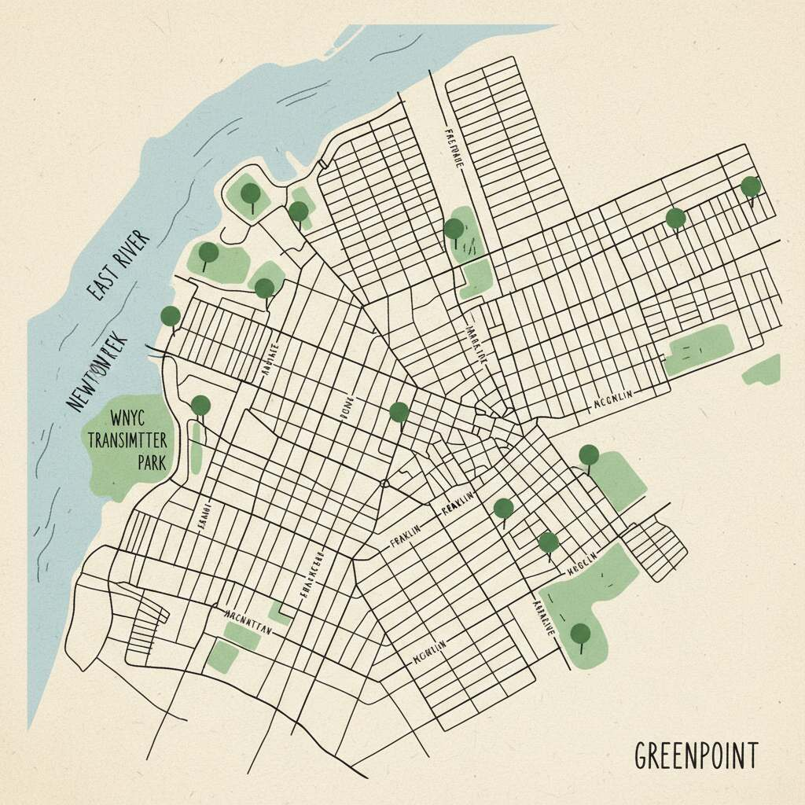

Live camera feeds from rooftops, streets, and storefronts. A map of the neighborhood's hottest spots — bars, studios, galleries, food. Updated continuously.

§ THE MAP
Camera positions and hot spots, all within walking distance of Franklin Street. Pins pulse green when their feed is live. Tap any to jump to its camera.
§ HOT SPOTS
Bars, galleries, studios, food. Curated by the neighborhood. Open now or opening soon — we surface what's live, not what pays for placement.
§ ABOUT
This site is a real-time snapshot of the neighborhood — what's live, what's open, what's happening right now. No algorithm. No ads. No tracking. Just feeds and a map. Cameras are user-submitted and community-moderated. If a feed goes dark, a neighbor flags it. If a spot closes, someone updates the list.
Started by @george · community-run · made in Brooklyn
§ CONTRIBUTE
Add it to the map. We review every submission within 24 hours.